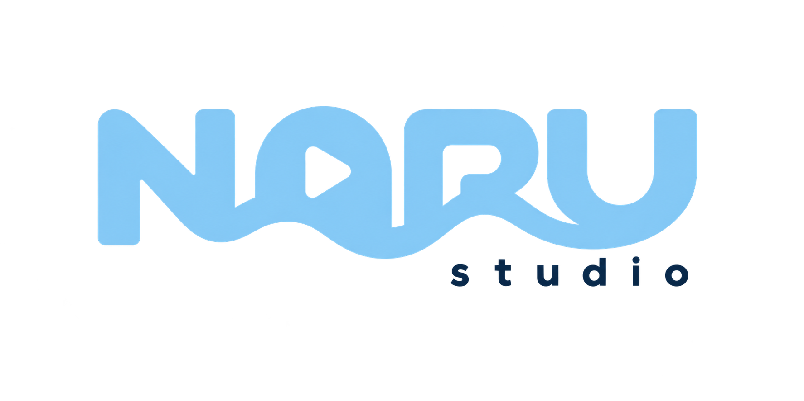

Brand Identity Guidelines
NARU studio CI 가이드라인 및 로고 사용 규정
01
주요 로고
PRIMARY LOGO
PRIMARY WORDMARK
부산에서, 취향이 닿는 곳
NARU studio는 부산의 덕질 명소, 전시, 팝업, 캐릭터 숍과 팬 문화를 발견하고 연결하는 콘텐츠 스튜디오입니다. 이어지는 곡선은 부산의 바다와 나루, 사람과 취향의 연결을 상징하며 A의 재생 모티프는 영상 콘텐츠를 나타냅니다.
로고의 비율과 구성 요소를 임의로 변경하지 말고 지정된 원본 파일을 사용합니다.
02
컬러 팔레트
COLOR PALETTE03
로고 여백 규정
CLEAR SPACE1x1x1x1x
로고 주변에는 시각적 명확성을 위해 최소 1x 이상의 보호 여백을 확보합니다.
04
최소 크기 규정
MINIMUM SIZE디지털 DigitalMin H: 48px
인쇄 PrintMin H: 15mm
가독성 유지를 위해 정의된 최소 크기 이하로 사용하지 않습니다.
05
로고 사용 금지 사항
INCORRECT USAGE / DON'TS비율 및 형태 왜곡
로고 각도 임의 변경
규정 외 컬러 적용
낮은 대비 적용
효과 및 그림자 적용
복잡한 이미지 배경 배치
06